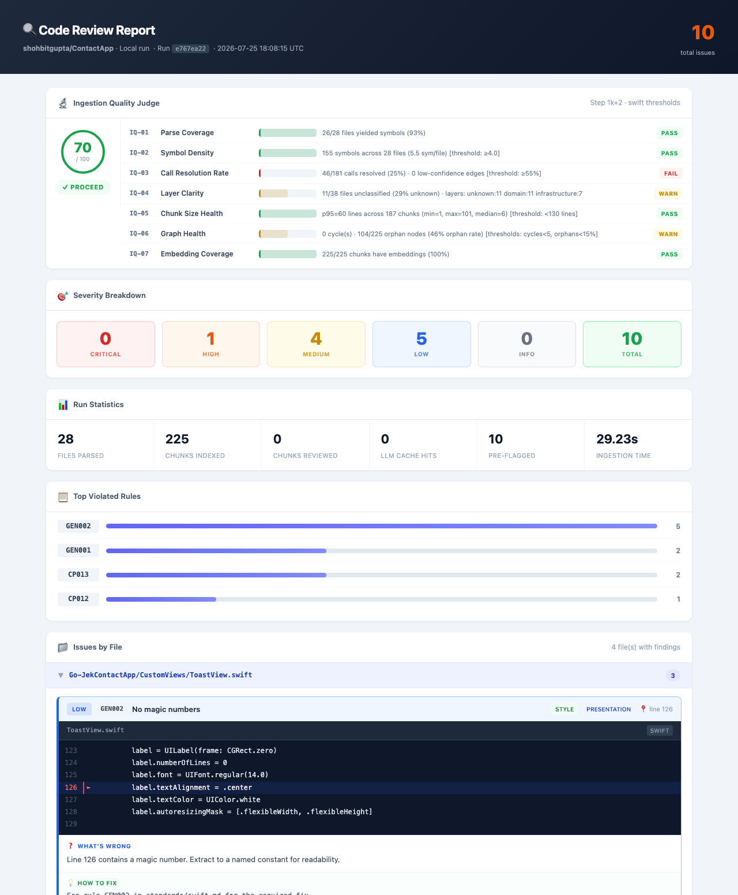

<title>Code Reviewer Agent — Product Overview</title>
<style>
  :root{
    --navy:#0f1530;
    --navy-2:#171f45;
    --indigo:#4f46e5;
    --indigo-soft:#eef0fd;
    --orange:#f2994a;
    --orange-soft:#fef3e8;
    --teal:#0d9488;
    --teal-soft:#e6f6f4;
    --red:#e0505a;
    --red-soft:#fbebec;
    --amber:#d99a2b;
    --amber-soft:#fbf3e2;
    --slate-900:#0f172a;
    --slate-700:#334155;
    --slate-600:#54607a;
    --slate-400:#94a3b8;
    --slate-300:#cdd3e0;
    --slate-100:#f4f6fb;
    --line:#e3e7f1;
  }
  *{margin:0;padding:0;box-sizing:border-box;}
  html,body{background:#e9ecf3;}
  body{
    font-family:-apple-system,"Segoe UI",Roboto,Helvetica,Arial,sans-serif;
    color:var(--slate-900);
    -webkit-font-smoothing:antialiased;
  }
  @page{ size:297mm 210mm; margin:0; }

  .slide{
    width:297mm;height:210mm;
    background:#fff;
    position:relative;
    overflow:hidden;
    page-break-after:always;
    break-after:page;
    display:flex;
    flex-direction:column;
    padding:14mm 18mm 12mm;
  }
  .slide:last-of-type{page-break-after:auto;}

  /* ---------- shared chrome ---------- */
  .eyebrow{
    font-size:10.5px; font-weight:700; letter-spacing:.12em; text-transform:uppercase;
    color:var(--indigo);
  }
  .slide-title{ font-size:26px; font-weight:800; color:var(--navy); margin-top:4px; letter-spacing:-.01em;}
  .slide-sub{ font-size:12.5px; color:var(--slate-600); margin-top:6px; max-width:780px; line-height:1.5;}
  .head-rule{ height:3px; width:46px; background:var(--orange); border-radius:2px; margin-top:10px;}
  .slide-body{ flex:1; margin-top:18px; min-height:0; display:flex; flex-direction:column; justify-content:center; }
  .slide-foot{
    display:flex; align-items:center; justify-content:space-between;
    border-top:1px solid var(--line); padding-top:8px; margin-top:auto;
    font-size:9.5px; color:var(--slate-400); letter-spacing:.02em;
  }
  .slide-foot b{ color:var(--slate-600); }

  svg.icon{ width:20px;height:20px; stroke:currentColor; stroke-width:1.8; fill:none; stroke-linecap:round; stroke-linejoin:round; display:block;}

  /* ---------- COVER ---------- */
  .cover{
    background:radial-gradient(1100px 700px at 78% 12%, #232c58 0%, var(--navy) 55%, var(--navy) 100%);
    color:#fff; padding:0; justify-content:space-between;
  }
  .cover-top{ padding:20mm 22mm 0; }
  .cover-mid{ padding:0 22mm; flex:1; display:flex; flex-direction:column; justify-content:center;}
  .cover-brandmark{ display:flex; align-items:center; gap:10px; }
  .cover-brandmark .dot{ width:11px;height:11px;border-radius:3px; background:var(--orange);}
  .cover-brandmark span{ font-size:12px; font-weight:700; letter-spacing:.14em; color:#c7cdf0; text-transform:uppercase;}
  .cover-eyebrow{ margin-top:26mm; font-size:11.5px; font-weight:700; letter-spacing:.16em; color:#9aa4e0; text-transform:uppercase;}
  .cover-title{ font-size:52px; font-weight:800; letter-spacing:-.02em; margin-top:10px; line-height:1.08;}
  .cover-title span{ color:var(--orange);}
  .cover-subtitle{ font-size:16px; color:#c6cbe8; margin-top:14px; max-width:640px; line-height:1.55; font-weight:400;}
  .cover-flow{ display:flex; align-items:center; gap:8px; margin-top:26px;}
  .cover-flow .seg{ width:34px;height:5px;border-radius:3px; background:#39407a;}
  .cover-flow .seg.on{ background:var(--orange);}
  .cover-bottom{
    padding:16px 22mm 20mm; display:flex; justify-content:space-between; align-items:flex-end;
    border-top:1px solid #2a3160;
  }
  .cover-bottom .l{ font-size:11.5px; color:#8d95c8;}
  .cover-bottom .r{ font-size:11.5px; color:#8d95c8; text-align:right;}
  .cover-bottom b{ color:#e7e9f7;}

  /* ---------- generic grid helpers ---------- */
  .row{ display:flex; gap:16px; }
  .col{ flex:1; min-width:0; }

  /* ---------- KPI cards (exec summary) ---------- */
  .kpi-grid{ display:flex; gap:14px; }
  .kpi{
    flex:1; background:var(--slate-100); border:1px solid var(--line); border-radius:10px;
    padding:16px 14px; text-align:left;
  }
  .kpi .num{ font-size:30px; font-weight:800; color:var(--indigo); line-height:1;}
  .kpi .lbl{ font-size:11px; color:var(--slate-600); margin-top:8px; line-height:1.4; font-weight:600;}

  .summary-text{ font-size:13.5px; line-height:1.75; color:var(--slate-700); }
  .summary-text p{ margin-bottom:12px; }
  .summary-text strong{ color:var(--navy); }

  /* ---------- challenge slide ---------- */
  .challenge-grid{ display:grid; grid-template-columns:1fr 1fr; gap:14px 26px; }
  .challenge-item{ display:flex; gap:12px; align-items:flex-start; }
  .challenge-item .ico{
    flex:0 0 34px; width:34px;height:34px;border-radius:8px; background:var(--red-soft); color:var(--red);
    display:flex;align-items:center;justify-content:center;
  }
  .challenge-item .txt-t{ font-size:13px; font-weight:700; color:var(--navy);}
  .challenge-item .txt-d{ font-size:11.5px; color:var(--slate-600); margin-top:2px; line-height:1.45;}
  .callout{
    margin-top:16px; background:var(--navy); color:#fff; border-radius:10px; padding:16px 20px;
    font-size:13px; line-height:1.6; display:flex; gap:12px; align-items:center;
  }
  .callout .ico{ color:var(--orange); flex:0 0 22px;}
  .callout b{ color:var(--orange); }

  /* ---------- flow diagram ---------- */
  .flow-wrap{ margin-top:6px; }
  .flow-row{ display:flex; align-items:flex-start; justify-content:center; }
  .flow-node{ width:112px; display:flex; flex-direction:column; align-items:center; text-align:center; }
  .flow-node .badge{
    width:46px;height:46px;border-radius:50%; background:var(--indigo); color:#fff;
    display:flex;align-items:center;justify-content:center; font-weight:800; font-size:16px;
    box-shadow:0 3px 8px rgba(79,70,229,.35);
  }
  .flow-node.endpoint .badge{ background:var(--slate-700); }
  .flow-node.finish .badge{ background:var(--teal); }
  .flow-node .lbl{ margin-top:9px; font-weight:800; font-size:12.5px; color:var(--navy);}
  .flow-node .cap{ margin-top:3px; font-size:9.7px; color:var(--slate-600); line-height:1.35;}
  .flow-arrow{ width:22px; height:2px; background:var(--slate-300); margin-top:23px; position:relative; flex:0 0 22px;}
  .flow-arrow::after{
    content:''; position:absolute; right:-1px; top:-3.5px;
    border-left:6px solid var(--slate-300); border-top:4px solid transparent; border-bottom:4px solid transparent;
  }
  .gate-note{
    margin:22px auto 0; max-width:840px; background:var(--orange-soft); border-left:4px solid var(--orange);
    border-radius:8px; padding:12px 18px; font-size:12px; color:var(--slate-700); line-height:1.55;
    display:flex; gap:12px; align-items:flex-start;
  }
  .gate-note .ico{ color:var(--orange); flex:0 0 20px; margin-top:1px;}
  .gate-note b{ color:var(--navy); }

  .stage-legend{ margin-top:20px; display:flex; gap:14px; }
  .stage-legend .li{
    flex:1; background:var(--slate-100); border-radius:8px; padding:10px 12px; font-size:10.8px; color:var(--slate-600);
  }
  .stage-legend .li b{ display:block; color:var(--navy); font-size:11.5px; margin-bottom:2px;}

  /* ---------- five stage cards ---------- */
  .stage-cards{ display:flex; gap:14px; }
  .stage-card{
    flex:1; border:1px solid var(--line); border-radius:12px; padding:16px 14px; background:#fff;
    display:flex; flex-direction:column; gap:8px;
  }
  .stage-card .top{ display:flex; align-items:center; gap:9px; }
  .stage-card .num{
    width:26px;height:26px;border-radius:50%; background:var(--indigo-soft); color:var(--indigo);
    font-weight:800; font-size:12px; display:flex;align-items:center;justify-content:center;
  }
  .stage-card .name{ font-size:13.5px; font-weight:800; color:var(--navy);}
  .stage-card .desc{ font-size:11.2px; color:var(--slate-600); line-height:1.5; }

  /* ---------- differentiator / value cards ---------- */
  .quad{ display:grid; grid-template-columns:1fr 1fr; gap:14px; }
  .diff-card{
    border:1px solid var(--line); border-radius:12px; padding:16px 18px; display:flex; gap:14px; align-items:flex-start;
  }
  .diff-card .ico{
    flex:0 0 40px; width:40px;height:40px;border-radius:10px; background:var(--indigo-soft); color:var(--indigo);
    display:flex;align-items:center;justify-content:center;
  }
  .diff-card .t{ font-size:13.5px; font-weight:800; color:var(--navy); margin-bottom:3px;}
  .diff-card .d{ font-size:11.3px; color:var(--slate-600); line-height:1.5;}

  .value-row{ display:flex; gap:14px; }
  .value-card{
    flex:1; border-radius:12px; padding:16px 14px; background:var(--slate-100); border:1px solid var(--line);
  }
  .value-card .ico{ color:var(--teal); margin-bottom:10px;}
  .value-card .t{ font-size:12.8px; font-weight:800; color:var(--navy); margin-bottom:5px;}
  .value-card .d{ font-size:10.8px; color:var(--slate-600); line-height:1.5;}

  /* ---------- sample output slide ---------- */
  .sample-wrap{ display:flex; gap:26px; align-items:center; }
  .sample-frame{
    flex:0 0 46%; border:1px solid var(--line); border-radius:12px; overflow:hidden;
    box-shadow:0 14px 34px rgba(15,21,48,.16); height:380px; background:#0f1530;
  }
  .sample-frame img{ width:100%; height:auto; display:block; }
  .sample-points{ flex:1; display:flex; flex-direction:column; gap:14px; padding-top:6px;}
  .sample-point{ display:flex; gap:12px; align-items:flex-start;}
  .sample-point .ico{ color:var(--orange); flex:0 0 20px; margin-top:1px;}
  .sample-point .t{ font-size:12.5px; font-weight:800; color:var(--navy);}
  .sample-point .d{ font-size:11.2px; color:var(--slate-600); margin-top:2px; line-height:1.5;}

  /* ---------- roadmap slide ---------- */
  .roadmap-grid{ display:grid; grid-template-columns:1fr 1fr; gap:20px; align-items:start;}
  .roadmap-col{ border-radius:12px; padding:18px 20px; }
  .roadmap-col.today{ background:var(--teal-soft); border:1px solid #bfe6e0; }
  .roadmap-col.next{ background:var(--slate-100); border:1px solid var(--line); }
  .roadmap-col h3{ font-size:14px; font-weight:800; color:var(--navy); display:flex; align-items:center; gap:8px; margin-bottom:12px;}
  .roadmap-col.today h3{ color:#0b6b60; }
  .roadmap-list{ list-style:none; display:flex; flex-direction:column; gap:10px; }
  .roadmap-list li{ display:flex; gap:10px; align-items:flex-start; font-size:11.6px; color:var(--slate-700); line-height:1.5;}
  .roadmap-list .ico{ flex:0 0 18px; margin-top:1.5px; }
  .roadmap-col.today .ico{ color:var(--teal); }
  .roadmap-col.next .ico{ color:var(--amber); }

  /* ---------- closing slide ---------- */
  .closing{ background:var(--navy); color:#fff; }
  .closing .slide-title{ color:#fff; }
  .closing .slide-sub{ color:#c6cbe8; }
  .closing-statement{
    font-size:19px; font-weight:700; line-height:1.5; max-width:900px; margin:20px 0 26px; color:#fff;
  }
  .closing-statement b{ color:var(--orange); }
  .steps{ display:flex; gap:16px; }
  .step{ flex:1; background:#1b2350; border:1px solid #2c3568; border-radius:12px; padding:16px; }
  .step .n{ font-size:22px; font-weight:800; color:var(--orange); }
  .step .t{ font-size:12px; font-weight:700; margin-top:8px; color:#fff; line-height:1.4;}
  .closing .slide-foot{ border-top:1px solid #2a3160; }
  .closing .slide-foot span, .closing .slide-foot b{ color:#8d95c8; }
</style>

<!-- shared icon defs -->
<svg style="display:none">
<defs>
  <symbol id="i-branch" viewBox="0 0 24 24"><line x1="6" y1="3" x2="6" y2="15"/><circle cx="18" cy="6" r="3"/><circle cx="6" cy="18" r="3"/><path d="M18 9a9 9 0 0 1-9 9"/></symbol>
  <symbol id="i-search" viewBox="0 0 24 24"><circle cx="11" cy="11" r="7"/><line x1="21" y1="21" x2="16.65" y2="16.65"/></symbol>
  <symbol id="i-shield" viewBox="0 0 24 24"><path d="M12 2 4 5v6c0 5.2 3.4 9.4 8 11 4.6-1.6 8-5.8 8-11V5z"/></symbol>
  <symbol id="i-zap" viewBox="0 0 24 24"><polygon points="13 2 3 14 12 14 11 22 21 10 12 10"/></symbol>
  <symbol id="i-msg" viewBox="0 0 24 24"><path d="M21 11.5a8.4 8.4 0 0 1-8.5 8.5 8.3 8.3 0 0 1-3.8-.9L3 21l1.9-5.7a8.3 8.3 0 0 1-.9-3.8A8.4 8.4 0 0 1 12.5 3h.1a8.4 8.4 0 0 1 8.4 8.4z"/></symbol>
  <symbol id="i-file" viewBox="0 0 24 24"><path d="M14 2H6a2 2 0 0 0-2 2v16a2 2 0 0 0 2 2h12a2 2 0 0 0 2-2V8z"/><polyline points="14 2 14 8 20 8"/><line x1="16" y1="13" x2="8" y2="13"/><line x1="16" y1="17" x2="8" y2="17"/></symbol>
  <symbol id="i-check" viewBox="0 0 24 24"><circle cx="12" cy="12" r="10"/><path d="M8 12l3 3 5-6"/></symbol>
  <symbol id="i-dollar" viewBox="0 0 24 24"><line x1="12" y1="1" x2="12" y2="23"/><path d="M17 5H9.5a3.5 3.5 0 0 0 0 7h5a3.5 3.5 0 0 1 0 7H6"/></symbol>
  <symbol id="i-layers" viewBox="0 0 24 24"><polygon points="12 2 2 7 12 12 22 7"/><polyline points="2 17 12 22 22 17"/><polyline points="2 12 12 17 22 12"/></symbol>
  <symbol id="i-gauge" viewBox="0 0 24 24"><polyline points="22 12 18 12 15 21 9 3 6 12 2 12"/></symbol>
  <symbol id="i-clock" viewBox="0 0 24 24"><circle cx="12" cy="12" r="10"/><polyline points="12 6 12 12 16 14"/></symbol>
  <symbol id="i-alert" viewBox="0 0 24 24"><path d="M12 2 1 21h22z"/><line x1="12" y1="9" x2="12" y2="13"/><line x1="12" y1="17" x2="12" y2="17.01"/></symbol>
  <symbol id="i-users" viewBox="0 0 24 24"><path d="M17 21v-2a4 4 0 0 0-4-4H5a4 4 0 0 0-4 4v2"/><circle cx="9" cy="7" r="4"/><path d="M23 21v-2a4 4 0 0 0-3-3.87"/><path d="M16 3.13a4 4 0 0 1 0 7.75"/></symbol>
  <symbol id="i-arrow" viewBox="0 0 24 24"><line x1="5" y1="12" x2="19" y2="12"/><polyline points="12 5 19 12 12 19"/></symbol>
</defs>
</svg>

<!-- ============ SLIDE 1 — COVER ============ -->
<section class="slide cover">
  <div class="cover-top">
    <div class="cover-brandmark"><span class="dot"></span><span>Engineering &middot; AI Platform</span></div>
  </div>
  <div class="cover-mid">
    <div class="cover-eyebrow">Product Overview &middot; Executive Briefing</div>
    <div class="cover-title">Code Reviewer <span>Agent</span></div>
    <div class="cover-subtitle">An AI-powered code review pipeline that reviews every pull request automatically — evidence-backed, standards-driven, and cost-controlled by design.</div>
    <div class="cover-flow">
      <div class="seg on"></div><div class="seg on"></div><div class="seg on"></div><div class="seg on"></div><div class="seg on"></div>
    </div>
  </div>
  <div class="cover-bottom">
    <div class="l">Prepared for <b>Leadership Review</b></div>
    <div class="r"><b>July 2026</b><br>Confidential — Internal Use Only</div>
  </div>
</section>

<!-- ============ SLIDE 2 — EXECUTIVE SUMMARY ============ -->
<section class="slide">
  <div class="eyebrow">Executive Summary</div>
  <div class="slide-title">A Faster, More Consistent First Line of Code Review</div>
  <div class="head-rule"></div>
  <div class="slide-body">
    <div class="row" style="gap:32px; align-items:center;">
      <div class="col" style="flex:1.15;">
        <div class="summary-text">
          <p><strong>Code Reviewer Agent</strong> is an AI system that automatically reviews source code the moment a pull request is opened — reading real code structure, applying a shared set of engineering and security standards, and producing findings that are checked against actual evidence before a human ever sees them.</p>
          <p>It is deliberately built to be trustworthy, not just fast: it judges whether it has understood a codebase well enough <em>before</em> spending any AI budget on reviewing it, rejects any finding that can't point to real code, and enforces hard spending limits on every run.</p>
          <p>The outcome is a review layer that runs in minutes, never gets tired, applies the same bar to every team, and gives engineering leadership a clear, auditable record of what was reviewed and what it cost.</p>
        </div>
      </div>
      <div class="col" style="flex:1;">
        <div class="kpi-grid" style="flex-direction:column;">
          <div class="kpi"><div class="num">5</div><div class="lbl">Automated stages — from repository link to posted review</div></div>
          <div class="kpi"><div class="num">70+</div><div class="lbl">Coding, security, and architecture standards enforced on every review</div></div>
          <div class="kpi"><div class="num">5</div><div class="lbl">Languages supported today — Python, Swift, Kotlin, Dart, Rust</div></div>
          <div class="kpi"><div class="num">100%</div><div class="lbl">Of findings checked against real code evidence before being shown</div></div>
        </div>
      </div>
    </div>
  </div>
  <div class="slide-foot"><span><b>Code Reviewer Agent</b> — Product Overview</span><span>Page 2 / 10</span></div>
</section>

<!-- ============ SLIDE 3 — THE CHALLENGE ============ -->
<section class="slide">
  <div class="eyebrow">The Challenge</div>
  <div class="slide-title">Manual Review Doesn't Scale With the Team</div>
  <div class="head-rule"></div>
  <div class="slide-body">
    <div class="challenge-grid">
      <div class="challenge-item">
        <div class="ico"><svg class="icon"><use href="#i-users"/></svg></div>
        <div><div class="txt-t">Quality depends on who's available</div><div class="txt-d">Review depth varies with reviewer experience, workload, and time zone — the same PR can get very different scrutiny on different days.</div></div>
      </div>
      <div class="challenge-item">
        <div class="ico"><svg class="icon"><use href="#i-clock"/></svg></div>
        <div><div class="txt-t">Senior engineers spend hours reviewing</div><div class="txt-d">Time that could go toward building product instead goes toward re-explaining the same standards, PR after PR.</div></div>
      </div>
      <div class="challenge-item">
        <div class="ico"><svg class="icon"><use href="#i-alert"/></svg></div>
        <div><div class="txt-t">Security issues slip through under deadline pressure</div><div class="txt-d">Hardcoded secrets and unsafe patterns are easy to miss in a fast, manual pass before a release.</div></div>
      </div>
      <div class="challenge-item">
        <div class="ico"><svg class="icon"><use href="#i-file"/></svg></div>
        <div><div class="txt-t">Standards live in docs, not in practice</div><div class="txt-d">Coding and architecture guidelines are written down once and enforced inconsistently thereafter.</div></div>
      </div>
    </div>
    <div class="callout">
      <div class="ico"><svg class="icon"><use href="#i-zap"/></svg></div>
      <div>What engineering teams need is a first line of review that is <b>instant, consistent, and impartial</b> — freeing human reviewers to focus judgment on the decisions that actually need it.</div>
    </div>
  </div>
  <div class="slide-foot"><span><b>Code Reviewer Agent</b> — Product Overview</span><span>Page 3 / 10</span></div>
</section>

<!-- ============ SLIDE 4 — HOW IT WORKS (FLOW) ============ -->
<section class="slide">
  <div class="eyebrow">The Solution</div>
  <div class="slide-title">How It Works — End to End</div>
  <div class="slide-sub">One pipeline, five automated stages — from a repository link or pull request to a posted review, typically in minutes.</div>
  <div class="slide-body">
    <div class="flow-wrap">
      <div class="flow-row">
        <div class="flow-node endpoint">
          <div class="badge"><svg class="icon" style="width:18px;height:18px;"><use href="#i-branch"/></svg></div>
          <div class="lbl">Repo / PR</div>
          <div class="cap">GitHub URL or pull request</div>
        </div>
        <div class="flow-arrow"></div>
        <div class="flow-node">
          <div class="badge">1</div>
          <div class="lbl">Ingestion</div>
          <div class="cap">Parse code, map structure, score readiness</div>
        </div>
        <div class="flow-arrow"></div>
        <div class="flow-node">
          <div class="badge">2</div>
          <div class="lbl">Standards</div>
          <div class="cap">Load coding &amp; security rules</div>
        </div>
        <div class="flow-arrow"></div>
        <div class="flow-node">
          <div class="badge">3</div>
          <div class="lbl">Review</div>
          <div class="cap">AI review, evidence-checked</div>
        </div>
        <div class="flow-arrow"></div>
        <div class="flow-node">
          <div class="badge">4</div>
          <div class="lbl">Comments</div>
          <div class="cap">Group, prioritize, format</div>
        </div>
        <div class="flow-arrow"></div>
        <div class="flow-node">
          <div class="badge">5</div>
          <div class="lbl">Report</div>
          <div class="cap">Build the final report</div>
        </div>
        <div class="flow-arrow"></div>
        <div class="flow-node finish">
          <div class="badge"><svg class="icon" style="width:18px;height:18px;"><use href="#i-file"/></svg></div>
          <div class="lbl">Delivered</div>
          <div class="cap">Report + inline PR comments</div>
        </div>
      </div>
      <div class="gate-note">
        <div class="ico"><svg class="icon"><use href="#i-gauge"/></svg></div>
        <div><b>Quality Gate, right after Stage 1:</b> the system scores how well it understood the codebase. If that score is too low, the review stops there — no AI spend is wasted reviewing code it can't reliably reason about.</div>
      </div>
      <div class="stage-legend">
        <div class="li"><b>Minutes, not days</b>A typical repository moves from link to finished review without a queue.</div>
        <div class="li"><b>Every run is logged</b>Cost, duration, and outcome are recorded for every single run.</div>
        <div class="li"><b>Human-in-the-loop ready</b>Output is a report and PR comments — engineers stay the final decision-maker.</div>
      </div>
    </div>
  </div>
  <div class="slide-foot"><span><b>Code Reviewer Agent</b> — Product Overview</span><span>Page 4 / 10</span></div>
</section>

<!-- ============ SLIDE 5 — FIVE STAGES EXPLAINED ============ -->
<section class="slide">
  <div class="eyebrow">The Solution</div>
  <div class="slide-title">The Five Stages, In Plain Terms</div>
  <div class="head-rule"></div>
  <div class="slide-body">
    <div class="stage-cards">
      <div class="stage-card">
        <div class="top"><div class="num">1</div><div class="name">Ingestion</div></div>
        <div class="desc">Reads the repository, understands the real structure of the code and how files connect, and checks whether it understood enough to proceed reliably.</div>
      </div>
      <div class="stage-card">
        <div class="top"><div class="num">2</div><div class="name">Standards</div></div>
        <div class="desc">Loads the relevant coding, security, and architecture rules for every language present in the codebase.</div>
      </div>
      <div class="stage-card">
        <div class="top"><div class="num">3</div><div class="name">Review</div></div>
        <div class="desc">The AI reviews each part of the code against those standards. Every finding must point to real, verifiable evidence or it is discarded.</div>
      </div>
      <div class="stage-card">
        <div class="top"><div class="num">4</div><div class="name">Comments</div></div>
        <div class="desc">Findings are grouped, prioritized, and capped so a pull request gets a focused set of comments — not a wall of noise.</div>
      </div>
      <div class="stage-card">
        <div class="top"><div class="num">5</div><div class="name">Report</div></div>
        <div class="desc">A clear report is produced and, where enabled, comments are posted directly on the pull request for the team to act on.</div>
      </div>
    </div>
  </div>
  <div class="slide-foot"><span><b>Code Reviewer Agent</b> — Product Overview</span><span>Page 5 / 10</span></div>
</section>

<!-- ============ SLIDE 6 — WHAT MAKES IT DIFFERENT ============ -->
<section class="slide">
  <div class="eyebrow">Why It Can Be Trusted</div>
  <div class="slide-title">Built for Trust, Not Just Speed</div>
  <div class="head-rule"></div>
  <div class="slide-body">
    <div class="quad">
      <div class="diff-card">
        <div class="ico"><svg class="icon"><use href="#i-check"/></svg></div>
        <div><div class="t">Evidence-validated findings</div><div class="d">Every AI finding must cite real, verifiable code. Unverifiable claims are rejected outright, and a second AI pass re-checks what survives for false positives.</div></div>
      </div>
      <div class="diff-card">
        <div class="ico"><svg class="icon"><use href="#i-gauge"/></svg></div>
        <div><div class="t">Quality gate before spend</div><div class="d">The system scores its own understanding of the code first. A badly-ingested or unclear codebase never reaches a costly AI review.</div></div>
      </div>
      <div class="diff-card">
        <div class="ico"><svg class="icon"><use href="#i-dollar"/></svg></div>
        <div><div class="t">Built-in spend controls</div><div class="d">Hard per-run and daily cost ceilings, with full logging of cost, time, and outcome for every single run — no surprise AI bills.</div></div>
      </div>
      <div class="diff-card">
        <div class="ico"><svg class="icon"><use href="#i-layers"/></svg></div>
        <div><div class="t">Vendor-flexible AI layer</div><div class="d">Works with Anthropic, OpenAI, or an internal AI gateway. Development and production can safely run on different models — no vendor lock-in.</div></div>
      </div>
    </div>
  </div>
  <div class="slide-foot"><span><b>Code Reviewer Agent</b> — Product Overview</span><span>Page 6 / 10</span></div>
</section>

<!-- ============ SLIDE 7 — BUSINESS VALUE ============ -->
<section class="slide">
  <div class="eyebrow">Business Value</div>
  <div class="slide-title">What This Means for the Business</div>
  <div class="head-rule"></div>
  <div class="slide-body">
    <div class="value-row">
      <div class="value-card">
        <div class="ico"><svg class="icon"><use href="#i-clock"/></svg></div>
        <div class="t">Faster review cycles</div>
        <div class="d">Automated first-pass review completes in minutes, not review-queue days — pull requests move faster.</div>
      </div>
      <div class="value-card">
        <div class="ico"><svg class="icon"><use href="#i-shield"/></svg></div>
        <div class="t">Consistent standards</div>
        <div class="d">The same 70+ rules apply to every pull request, every team, every time — no reviewer-to-reviewer variance.</div>
      </div>
      <div class="value-card">
        <div class="ico"><svg class="icon"><use href="#i-alert"/></svg></div>
        <div class="t">Lower risk</div>
        <div class="d">Hardcoded secrets and unsafe patterns are caught automatically, before they reach production.</div>
      </div>
      <div class="value-card">
        <div class="ico"><svg class="icon"><use href="#i-dollar"/></svg></div>
        <div class="t">Controlled cost</div>
        <div class="d">Hard budget ceilings mean AI review spend is bounded and predictable, never runaway.</div>
      </div>
      <div class="value-card">
        <div class="ico"><svg class="icon"><use href="#i-file"/></svg></div>
        <div class="t">Full auditability</div>
        <div class="d">Every run is logged — what was reviewed, what it found, and what it cost — for engineering and finance alike.</div>
      </div>
    </div>
  </div>
  <div class="slide-foot"><span><b>Code Reviewer Agent</b> — Product Overview</span><span>Page 7 / 10</span></div>
</section>

<!-- ============ SLIDE 8 — SAMPLE OUTPUT ============ -->
<section class="slide">
  <div class="eyebrow">Sample Output</div>
  <div class="slide-title">What Teams Actually See</div>
  <div class="head-rule"></div>
  <div class="slide-body">
    <div class="sample-wrap">
      <div class="sample-frame">
        
      </div>
      <div class="sample-points">
        <div class="sample-point">
          <div class="ico"><svg class="icon"><use href="#i-gauge"/></svg></div>
          <div><div class="t">An at-a-glance quality score</div><div class="d">A 0–100 readiness score shows whether the codebase was understood well enough for the findings below to be trusted.</div></div>
        </div>
        <div class="sample-point">
          <div class="ico"><svg class="icon"><use href="#i-alert"/></svg></div>
          <div><div class="t">Severity, sized for triage</div><div class="d">Findings are bucketed Critical / High / Medium / Low / Info, so teams know exactly what needs attention first.</div></div>
        </div>
        <div class="sample-point">
          <div class="ico"><svg class="icon"><use href="#i-file"/></svg></div>
          <div><div class="t">Per-file findings with fixes</div><div class="d">Each issue links to the exact file and line, with the code shown in context and a suggested fix.</div></div>
        </div>
        <div class="sample-point">
          <div class="ico"><svg class="icon"><use href="#i-clock"/></svg></div>
          <div><div class="t">Run statistics, every time</div><div class="d">Files parsed, chunks indexed, and total time are captured for every run — no guesswork about coverage.</div></div>
        </div>
      </div>
    </div>
  </div>
  <div class="slide-foot"><span><b>Code Reviewer Agent</b> — Product Overview</span><span>Page 8 / 10</span></div>
</section>

<!-- ============ SLIDE 9 — STATUS & ROADMAP ============ -->
<section class="slide">
  <div class="eyebrow">Status &amp; Roadmap</div>
  <div class="slide-title">Where We Are, What's Next</div>
  <div class="head-rule"></div>
  <div class="slide-body">
    <div class="roadmap-grid">
      <div class="roadmap-col today">
        <h3><svg class="icon" style="width:18px;height:18px;"><use href="#i-check"/></svg>Available Today</h3>
        <ul class="roadmap-list">
          <li><span class="ico"><svg class="icon" style="width:14px;height:14px;"><use href="#i-check"/></svg></span>End-to-end 5-stage pipeline, run from the command line or a lightweight web app</li>
          <li><span class="ico"><svg class="icon" style="width:14px;height:14px;"><use href="#i-check"/></svg></span>Multi-language support — Python, Swift, Kotlin, Dart, Rust</li>
          <li><span class="ico"><svg class="icon" style="width:14px;height:14px;"><use href="#i-check"/></svg></span>Direct GitHub pull-request integration, including inline comments</li>
          <li><span class="ico"><svg class="icon" style="width:14px;height:14px;"><use href="#i-check"/></svg></span>Hard spend limits and full cost/time logging on every run</li>
          <li><span class="ico"><svg class="icon" style="width:14px;height:14px;"><use href="#i-check"/></svg></span>A measured quality bar — an evaluation suite scores review accuracy against a benchmark, not just trust-on-faith</li>
        </ul>
      </div>
      <div class="roadmap-col next">
        <h3><svg class="icon" style="width:18px;height:18px;"><use href="#i-clock"/></svg>Coming Next</h3>
        <ul class="roadmap-list">
          <li><span class="ico"><svg class="icon" style="width:14px;height:14px;"><use href="#i-clock"/></svg></span>Automatic reviews on every pull request — no manual trigger required</li>
          <li><span class="ico"><svg class="icon" style="width:14px;height:14px;"><use href="#i-clock"/></svg></span>Organization-wide scale — many repositories and teams running at once</li>
          <li><span class="ico"><svg class="icon" style="width:14px;height:14px;"><use href="#i-clock"/></svg></span>Enterprise access controls — authentication, multi-team isolation, per-team limits</li>
          <li><span class="ico"><svg class="icon" style="width:14px;height:14px;"><use href="#i-clock"/></svg></span>Leadership-facing dashboards for quality and cost trends over time</li>
        </ul>
      </div>
    </div>
  </div>
  <div class="slide-foot"><span><b>Code Reviewer Agent</b> — Product Overview</span><span>Page 9 / 10</span></div>
</section>

<!-- ============ SLIDE 10 — CLOSING ============ -->
<section class="slide closing">
  <div class="eyebrow" style="color:var(--orange);">Next Steps</div>
  <div class="slide-title">Ready for a Pilot</div>
  <div class="slide-sub">A production-grade first line of code review — consistent, evidence-backed, and cost-controlled from day one.</div>
  <div class="slide-body">
    <div class="closing-statement">Recommendation: run <b>Code Reviewer Agent</b> in shadow mode alongside the existing review process on one team, then decide on wider rollout using real cost and quality data.</div>
    <div class="steps">
      <div class="step"><div class="n">1</div><div class="t">Select a pilot repository and team</div></div>
      <div class="step"><div class="n">2</div><div class="t">Run in shadow mode for 2–4 weeks alongside existing review</div></div>
      <div class="step"><div class="n">3</div><div class="t">Review cost, quality, and time-saved metrics together</div></div>
      <div class="step"><div class="n">4</div><div class="t">Decide on rollout scope and timeline</div></div>
    </div>
  </div>
  <div class="slide-foot"><span>Prepared by Engineering — July 2026</span><span>Page 10 / 10</span></div>
</section>
